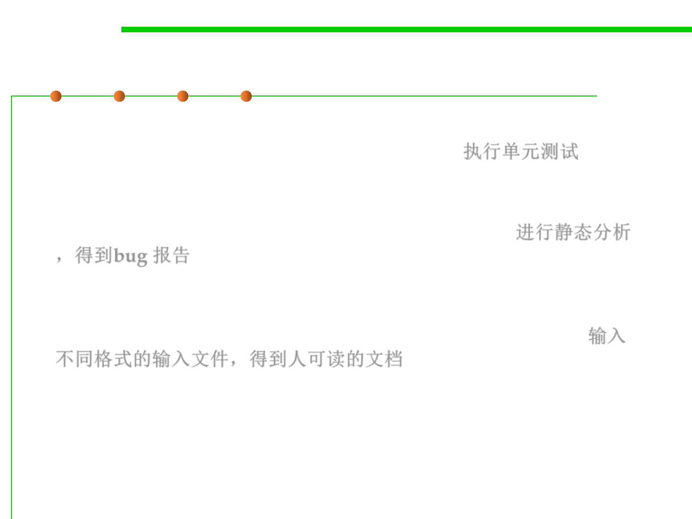

2.2 Process, Systems, and Tools of Software Construction
Typical BUILD scenarios
▪ 4. The execution of unit tests to validate small portions of the
software in isolation from the rest of the code. 执行单元测试
▪ 5. The execution of static analysis tools to identify bugs in a
program’s source code. The output from this build system is a bug
report document rather than an executable program. 进行静态分析
，得到bug 报告
▪ 6. The generation of PDF or HTML documentation. This type of
build system consumes input files in a range of different formats
but generates human-readable documentation as the output. 输入
不同格式的输入文件，得到人可读的文档